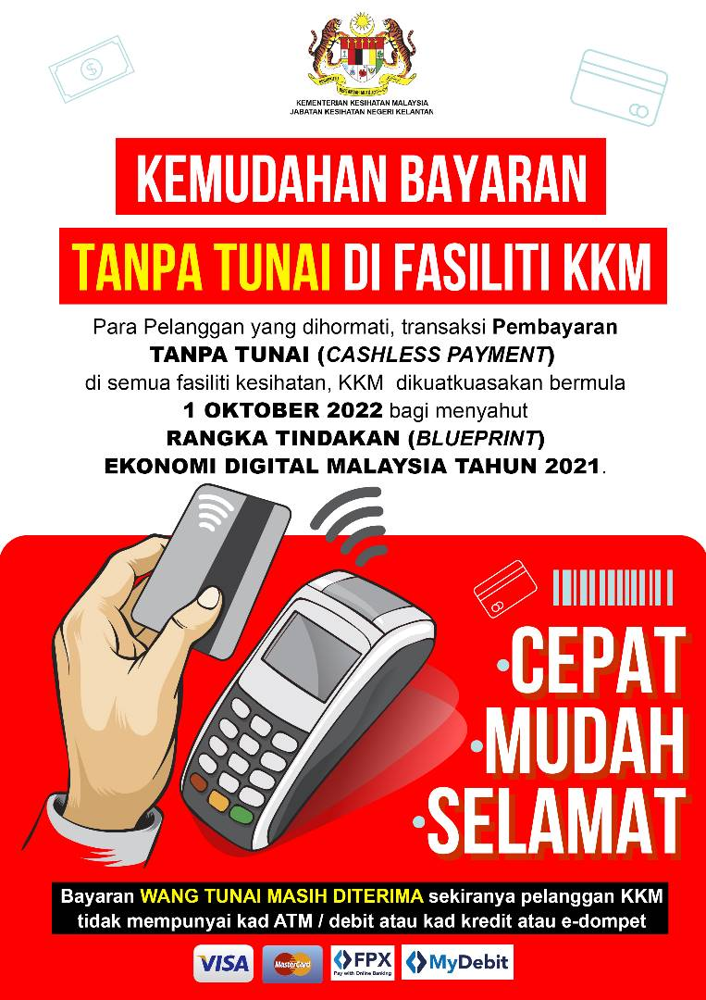
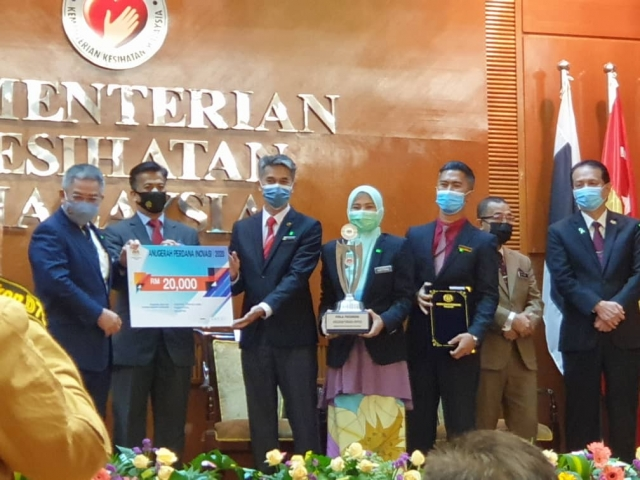

PENGUMUMAN
BAYARAN TANPA TUNAI DI FASILITI KKM
PEMAKLUMAN PENAMATAN TALIAN FAKS HOSPITAL TUMPAT
Dengan segala hormatnya saya merujuk kepada perkara di atas. Untuk makluman Tuan, penghantaran dan penerimaan dokumen secara faks menunjukkan trend yang semakin menurun serta jarang digunakan dan emel telah digunakan sebagai medium penghantaran maklumat yang lebih cepat dan efisien bagi menggantikan mesin faks. Sehubungan dengan itu, Jabatan ini telah memutuskan untuk menamatkan talian faksimili serta-merta berkuatkuasa dari tarikh surat ini (25 Januari 2023) dikeluarkan. Kerjasama Tuan adlah dipohon menggunakan emel jabatan hostumpat@moh.gov.my atau emel pegawai berkaitan sebagai platform rasmi bagi tujuan penghantaran surat atau dokumen ke Jabatan ini. Kerjasama dan perhatian Tuan dalam perkara ini amatlah dihargai dan didahului dengan ucapan terima kasih.
MAJLIS TILAWAH AL-QURAN PERINGKAT KEBANGSAAN KEMENTERIAN KESIHATAN MALAYSIA KALI KE-31 TAHUN 2022
Majlis Tilawah Al-Quran Peringkat Kebangsaan Kementerian Kesihatan Malaysia Kali Ke-31 Tahun 1444H/2022M telah diadakan pada 02 - 04 Oktober 2022 di Hotel Grand Riverview, Kota Bharu, Kelantan.
SAMBUTAN HARI INOVASI KEMENTERIAN KESIHATAN MALAYSIA 2020
Tahniah diucapkan kepada pasukan dari Hospital Tengku Anis Pasir Puteh yang memenangi Anugerah Perdana Inovasi 2020 pada majlis Sambutan Hari Inovasi Kementerian Kesihatan Malaysia pada 26 Mac 2021. Kumpulan TA Power telah menghasilkan katil berdiri untuk senaman fisioterapi bagi membantu rawatan pemulihan pesakit kanak-kanak istimewa.
Maklumat Perhubungan
+606-2356999
+06-2345969
jknkesihatan@moh.gov.my
2.2737820, 102.2887070